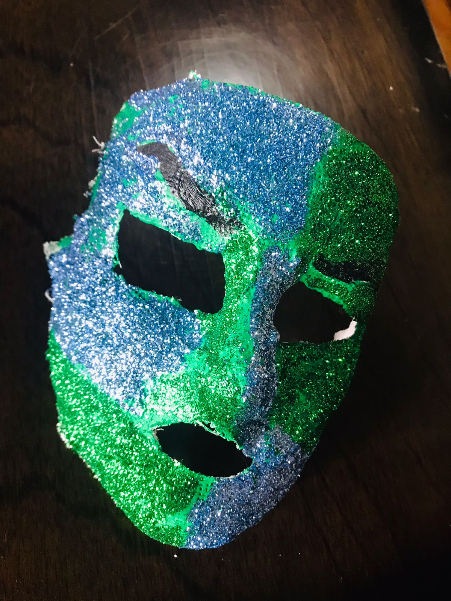
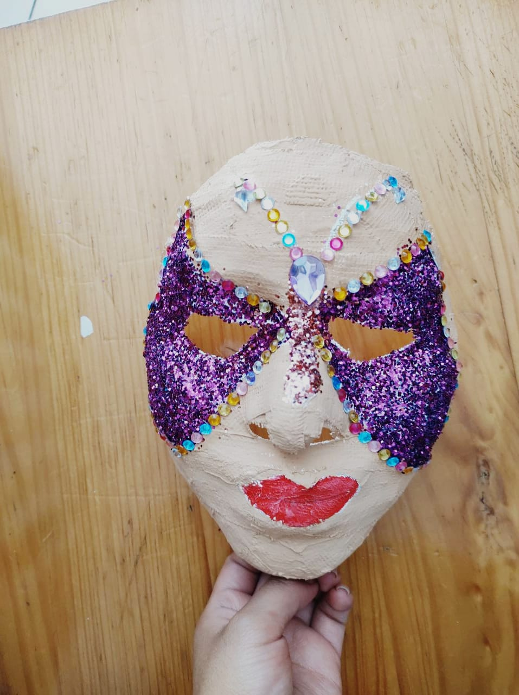
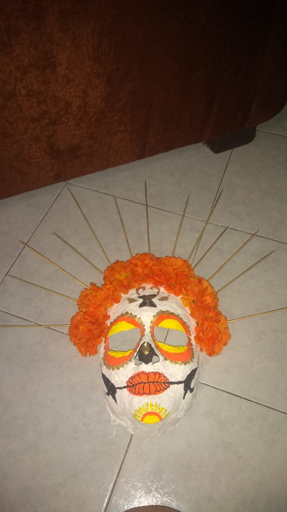

Boton para activiar el modo oscuro
Boton para activiar el mod oscuro

Significado:
El color azul en esta mascara representa la tristeza y el color verde desagrado.
Mascara morada
con blanco

Significado:
El color morado en esta mascara significa temor
Mascara amarilla
con naranja

Significado:
El color amarillo en la mascara significa alegria